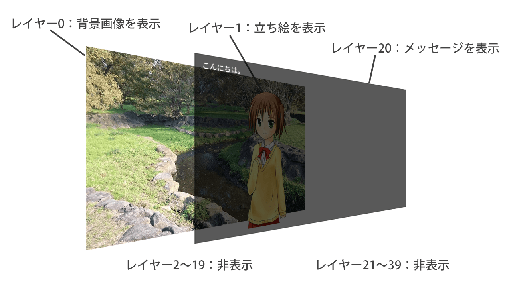

レイヤーとページ
レイヤーの基礎
Ponkanの画面表示はすべて、重ね合わせたレイヤーで表示されています。 Photoshopなどの画像編集ソフトのレイヤーと同じようなものです。
以下のスクリプトと画面を例に説明します。
# ゲーム開始スクリプト
;call file: "script/init_system.pon"
;loadimage lay: 0, file: "image/sample-bg.jpg", visible: true
;loadimage lay: 1, file: "image/chara.png", visible: true, x: 515, y: 100
こんにちは。

この画面は、
- 背景の画像
- キャラクターの画像
- メッセージ
の3つで構成されています。これらのレイヤー構成は、次のようになっています。

レイヤーは初期状態で40枚用意されており、0～39の番号で管理されています。 若い番号のレイヤーほど後ろに描画され、大きい番号のレイヤーほど手前に描画されます。
初期状態ではレイヤー20がメッセージレイヤーに設定されているので、ここにメッセージが出力されます。
画像のレイヤーで描画するのかは、コマンドのパラメータのlayで設定しています。
また、メッセージレイヤーを除くすべてのレイヤーは最初は非表示状態になっているので、
imageコマンドのvisibleパラメータでレイヤーを表示状態にしています。
imageコマンドでも可能ですが、通常はlayoptコマンドで行います。layoptコマンドは、レイヤーの座標、サイズ、表示などの設定を行うコマンドです。
ページ
Ponkanでは、上記で説明したレイヤー構成が2組あり、それぞれ表ページ・裏ページと呼びます。
表ページは画面に表示されている方のページです。通常、コマンドで操作する対象は表ページになります。
裏ページは画面に表示されません。コマンドで操作するためには、パラメータでpage: "back"と明示的に指定する必要があります。
前述のとおり、通常のコマンド実行では表ページが操作対象になります。
明示的に指定する場合は、表ページはpage: "fore"、裏ページはpage: "back"と指定します。
裏ページは画面に表示されないのになぜ存在するのかというと、これはトランジション（画面切り替え）のためです。 トランジションはページと裏ページを入れ替えることで行うため、その時の一時的な場所として裏ページが利用されます。 トランジションについては別章で説明します。
カレントページ
カレントページは「現在、メインの操作対象となっているページ」のことです。
レイヤー関係のコマンドでpage: "current"と指定すると、カレントページが操作対象となります。
カレントページはゲーム起動時は表ページ（"fore"）になっており、
pretransコマンドかcurrentpageコマンドによって切り替わります。
pageパラメータを持っていますが、通常は省略して使います。なぜなら、
pageを省略すると、デフォルト値である"current"が自動的に設定されるからです。
レイヤーの指定方法（layパラメータについて）
レイヤーを操作するコマンドでは、どのレイヤーを対象とするかをlayパラメータで指定します。
layの指定の仕方は、番号を一つだけ書くほかに、まとめて指定する方法が用意されています。
| 指定方法 | 記述 | 対象となるレイヤー |
|---|---|---|
| 単一指定 | lay: 0 |
0 |
| 複数指定 | lay: "0, 1" |
0, 1 |
| 範囲指定 | lay: "0-5" |
0, 1, 2, 3, 4, 5 |
| 単一+複数+範囲 | lay: "0, 5-7, 10-12" |
0, 5, 6, 7, 10, 11, 12 |
特別なレイヤー
いくつかのレイヤーには特別な役割が割り当てられているものがあります。
それらの特別なレイヤーについては、番号ではなく文字列で指定することができます。
| レイヤー | 記述 |
|---|---|
| メッセージレイヤー | lay: "message" または lay: "mes" |
| 行末グリフレイヤー | lay: "linebreak" |
| ページ末グリフレイヤー | lay: "pagebreak" |
| オート状態表示レイヤー | lay: "automode" または lay: "auto" |
メッセージレイヤー
メッセージレイヤーは、メッセージの表示先に指定されたレイヤーです。
初期状態でレイヤー20に設定されています。
メッセージレイヤーを指定する際、レイヤー番号のかわりに"message"または"mes"と指定することができます。
スクリプト中に書かれたテキストは、メッセージレイヤーに出力されます。
メッセージレイヤーを変更したい場合は、messagelayerコマンドを利用します。
行末グリフレイヤー、ページ末グリフレイヤー
行末クリック待ち、ページ末クリック待ちの際に表示されるレイヤーです。
初期状態ではレイヤー21、22が設定されています。
これらのレイヤーを指定する際、レイヤー番号のかわりに"linebreak" "pagebreak"と指定することができます。
グリフ用レイヤーは、linebreakコマンドやpagebreakコマンド実行時に自動的に表示され、クリックされると非表示になります。
オート状態表示レイヤー
オートモード（自動読み進めモード）のときに表示されるレイヤーです。
初期状態ではレイヤー23が設定されています。
オート状態表示レイヤーを指定する際、レイヤー番号のかわりに"automode"または"auto"と指定することができます。
オート状態表示レイヤーは、オートモード中は常に表示され、オートが解除されると非表示になります。
レイヤーエイリアス機能
レイヤーエイリアス機能は、レイヤー指定の番号に名前を付けて、管理を簡単にする機能です。
たとえば、レイヤー0には背景画像、レイヤー1にはキャラクター1の画像を表示する場合、 通常であれば以下のようなスクリプトになります。
# ゲーム開始スクリプト
;call file: "script/init_system.pon"
;loadimage lay: 0, file: "image/sample-bg.jpg", visible: true
;loadimage lay: 1, file: "image/chara.png", visible: true, x: 515, y: 100
こんにちは。
lay: 0やlay: 1と書いていますが、このくらいのスクリプト量なら問題なくても、
スクリプトが増えてくるとどのレイヤーに何を表示していたかがわからなくなってきます。
そこで、レイヤー番号に名前を付けて、記述をわかりやすくします。
# ゲーム開始スクリプト
;call file: "script/init_system.pon"
;layalias name: "base", lay: 0
;layalias name: "chara1", lay: 1
;loadimage lay: "base", file: "image/sample-bg.jpg", visible: true
;loadimage lay: "chara1", file: "image/chara.png", visible: true, x: 515, y: 100
こんにちは。
このようにわかりやすい名前を付けることで、スクリプトの見通しが良くなります。
ただし、Ponkanで最初から使用されている名前（"message"、"mes"、"linebreak"、"pagebreak"、"automode"、"auto"）は
使用できないので注意してください。
吉里吉里2/KAG3との差異
Ponkanのレイヤーと吉里吉里2/KAG3のレイヤでは色々な違いがありますが、 大きな違いは以下の2点です。
- Ponkanでは、すべてのレイヤーで画像表示とメッセージ表示の両方が実行できます。
- KAG3では背景レイヤ、前景レイヤ、メッセージレイヤと3種類のレイヤがありましたが、Ponkanでは区別はありません。
- Ponkanでは、レイヤーの表示順序は固定です。
- KAG3では
index属性でレイヤの重ね合わせ順序を変更できましたが、Ponkanでは変更できません。
- KAG3では